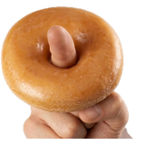

Transport BCN

Transport BCN
Bus · Metro · Tram · Rodalies · FGC
En directo
📍
📷
🧭
Mantén pulsado el mapa para explorar
🚏
Llegadas
🧭
Ir a…
Buscar
📍
Ver qué pasa cerca de mí
✕
🔄
✕
⚡
Ahora mismo
⭐
Favoritas
🕐
Recientes
Paradas cercanas
📤
★
🔄
0%
completado
—
restante
—
aprox.
Te has desviado de la ruta.
Recalcular
📷 AR
⚡
Alternativa
■
Finalizar
Paradas alrededor
…
✕
Mueve el móvil para calibrar la brújula 🔄